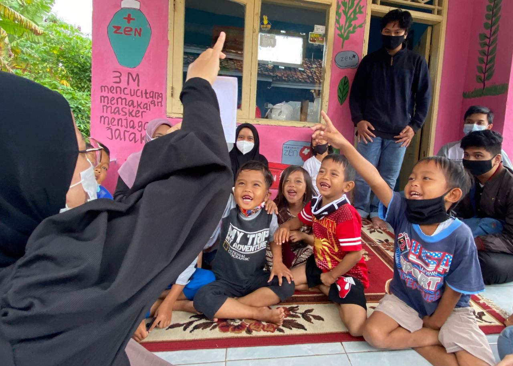
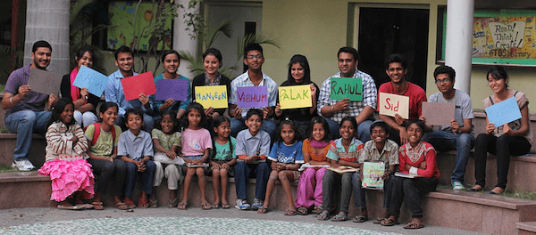
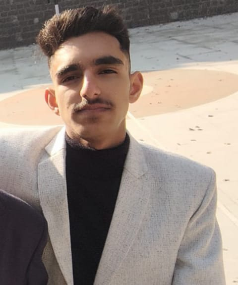

Our Mission

Since our founding in 2019 we have been determined to make a positive impact in the lives
of underprivileged children by providing them educational opportunities that they might not be able to access
otherwise.
Till date we had provide educational services to more than 380 students across
3 continents by organising different activities like educational camps, quizes, etc.
StudyDost will always remain a not-for-profit organization and we will soon be launching our academic website
which will be able to have education materials of various boards that are within and outside INDIA.
About Us

Founded in 2019 by Udit Sharma in sophomore year of high school, StudyDost was inspired by a group of young children who wanted to go to school but couldn't because of the poor economic conditions in their family..
He therefore wished to extend the assistance he provides to them at his home to many it could benefit. Since then he has
organized and trained a team of high school students from his school and abroad via various social media platforms.
StudyDost is currently a proud organization of thirty five high school students who give academic help to those that are in want of it.
Contact
Interested in joining the team? Want StudyDost team to help you?
Contact Udit!!

udits2004@gmail.com